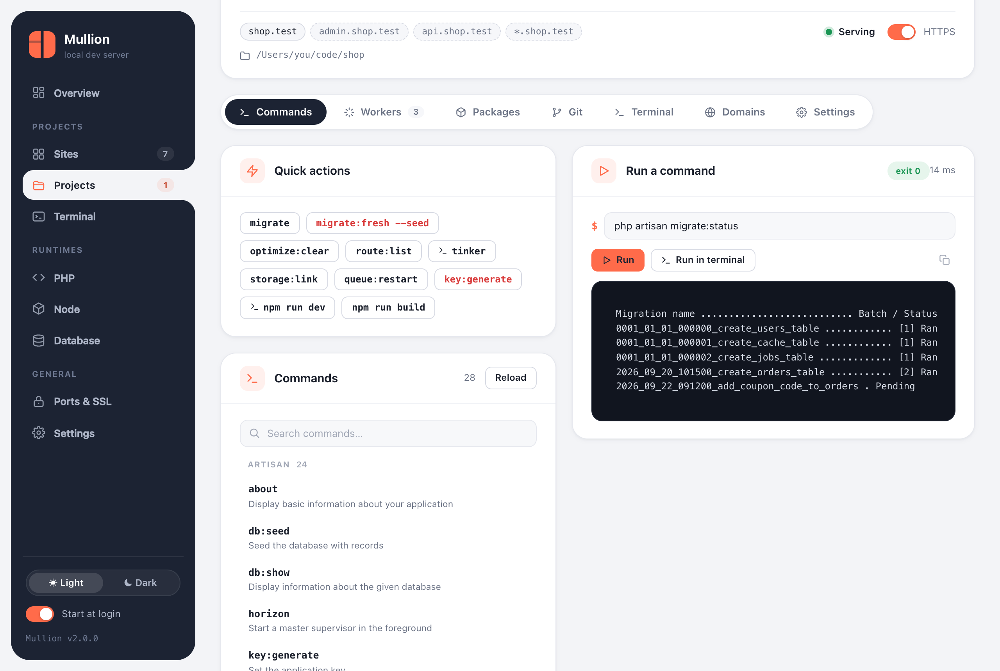
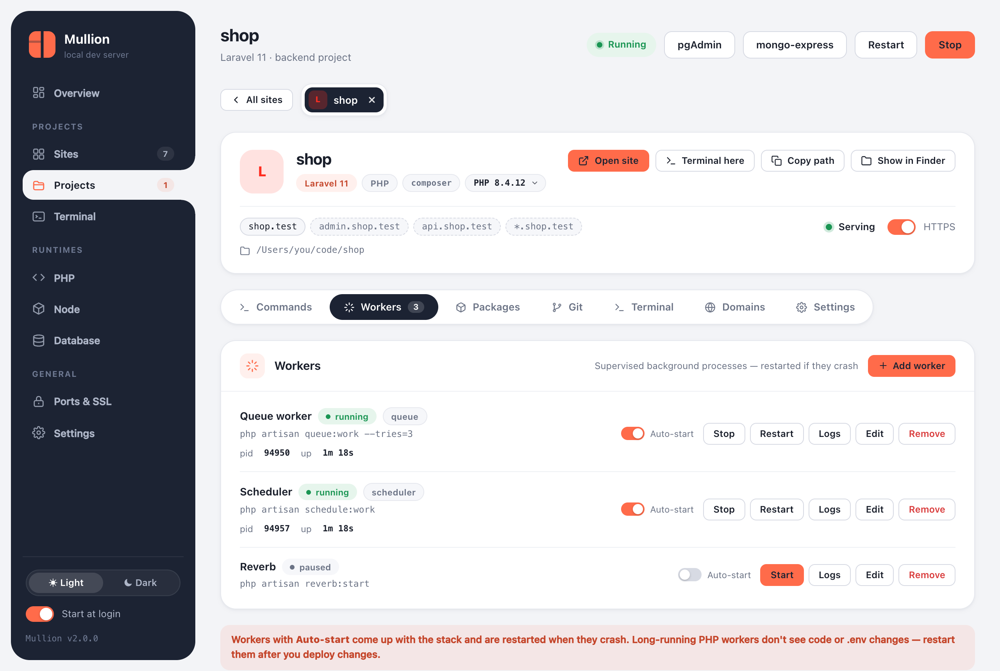

The project page
Everything about one project in one place: commands, workers, packages, Git, a terminal, domains and settings.
Open a project by clicking its name on the Sites page, with Manage, or by going to #project/<name> in the panel. The header shows:
- the framework, and the PHP or Node version (which you can change there)
- every domain, the serving status, and an HTTPS switch
- buttons for Open site, Terminal here, Copy path and Show in Finder/Explorer
The tabs you see depend on the project: a PHP project gets Workers, and a project with a composer.json or package.json gets Packages.
Commands
The Commands tab lists everything the project can run:
- artisan commands (Laravel) or
bin/consolecommands (Symfony), read from the framework itself - npm scripts from
package.json, run with the project's package manager - Composer scripts from
composer.json
Quick actions cover the usual tasks, such as migrate, optimize:clear, route:list and npm run build. Destructive ones are shown in red. Search the full list and mark favorites.
Commands run in the project folder with the project's PHP and Node, and their output streams into the panel. Interactive commands such as tinker, a REPL, or anything that prompts go to a terminal tab instead.

From a shell, mullion run does the same thing:
$ mullion run shop -- php artisan migrate
$ mullion run -- composer install # the site linked to the current folderWorkers
Workers are long-running commands that Mullion keeps up for a project. It offers templates for the project's framework:
- a Laravel queue worker
- the scheduler (
schedule:work, so you don't need cron) - Horizon and Reverb
- Symfony Messenger
- any custom command

- Each worker runs in the project folder with the project's PHP and Node on
PATH. - Its log is kept in
~/.mullion/logs/worker-<site>-<id>.log. Open it from the Logs button. - With Auto-start, a worker comes up with the stack.
- If a worker crashes, it restarts with backoff: 1s, 2s, 4s… capped at a minute. After 5 crashes within 2 minutes it's marked crash-looping and left stopped, so it doesn't spin forever.
- A worker you stop stays stopped until you start it.
- Long-running PHP workers don't see code or
.envchanges, so restart them after changing either.
$ mullion worker add shop --name Queue --kind queue --command "php artisan queue:work --tries=3" --autostart
$ mullion worker add shop --name Scheduler --kind scheduler --command "php artisan schedule:work" --autostart
$ mullion worker list
$ mullion worker logs shop queue -n 100
$ mullion worker restart shop queuePackages
Search Packagist or the npm registry, then install or remove a package, either as a normal dependency or as a dev dependency. The tab also lists the Composer and npm packages already installed. The CLI works the same way:
$ mullion pkg search composer stripe
$ mullion pkg add shop composer laravel/horizon
$ mullion pkg add shop npm @tailwindcss/vite --dev
$ mullion pkg list shop
$ mullion pkg remove shop npm lodashGit
A full Git client for the project, covered on the Git page.
Terminal
A terminal in the project folder, with the project's PHP and Node. See Terminal. Open in window pops it out.
Domains
- Add and remove subdomain aliases and the
*wildcard. - If wildcard DNS is off, a note tells you to turn it on.
- Frontend projects can also move their dev server to another port here. Mullion checks for conflicts and suggests a free port.
Settings
- The PHP version for this site (pinned, or following the global one), or the Node version.
- For frontend sites: the serve mode (dev server or production build).
- HTTPS, and renaming the site.
- A danger zone to unlink the site. The folder itself is never touched.